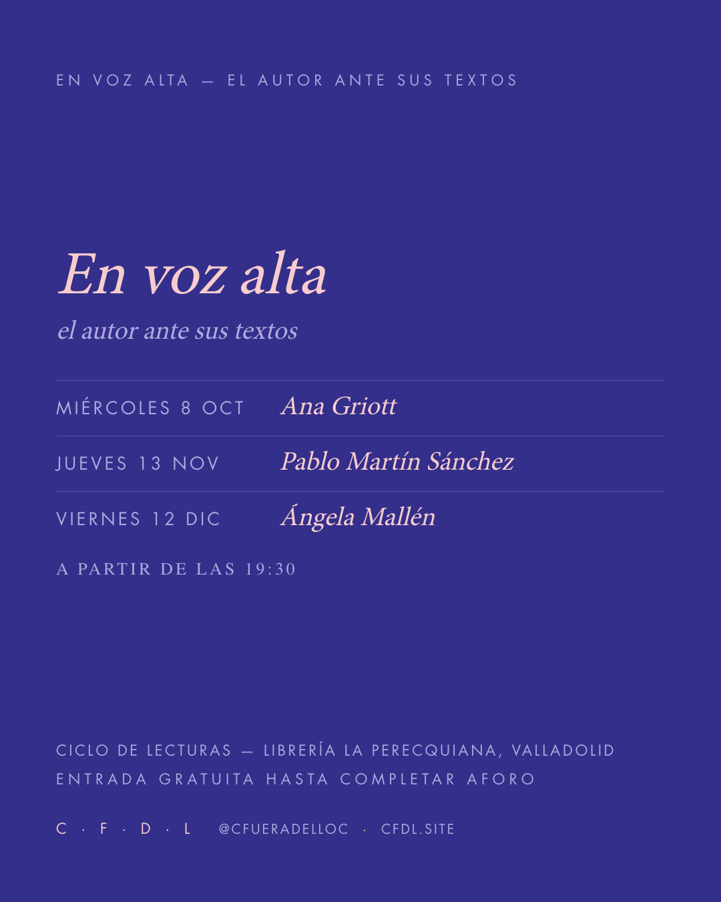

2025-10-08-ciclo-en-voz-alta
pinkfeed 1080×1350cicloentrada · posts/2025-10-08-ciclo-en-voz-alta.json → slides[0]
{
"plantilla": "ciclo",
"superficie": "oscuro",
"ciclo": "en-voz-alta",
"marca_cfdl": "sigla",
"agenda": [
{
"dia": "miércoles",
"fecha": "8 oct",
"nombre": "Ana Griott"
},
{
"dia": "jueves",
"fecha": "13 nov",
"nombre": "Pablo Martín Sánchez"
},
{
"dia": "viernes",
"fecha": "12 dic",
"nombre": "Ángela Mallén"
}
],
"hora": {
"prefijo": "a partir de las",
"texto": "19:30"
},
"tipo": "Ciclo de lecturas",
"lugar": "perecquiana",
"aforo": "Entrada gratuita hasta completar aforo",
"alt": "Cartel del ciclo En voz alta con sus tres sesiones: Ana Griott, Pablo Martín Sánchez y Ángela Mallén."
}salida

out/2025-10-08-ciclo-en-voz-alta-01.png
salida · out/2025-10-08-ciclo-en-voz-alta.caption.txt — el texto de la publicación
Tres sesiones de otoño. Escritoras y escritores leen sus propios textos en voz alta y hablan de lo que los sostiene. Ciclo de lecturas — Librería La Perecquiana, Valladolid Miércoles 8 de octubre, jueves 13 de noviembre, viernes 12 de diciembre, 19:30 Entrada gratuita hasta completar aforo cfdl.site
salida · out/2025-10-08-ciclo-en-voz-alta.alt.txt — texto alternativo por lámina
01: Cartel del ciclo En voz alta con sus tres sesiones: Ana Griott, Pablo Martín Sánchez y Ángela Mallén.